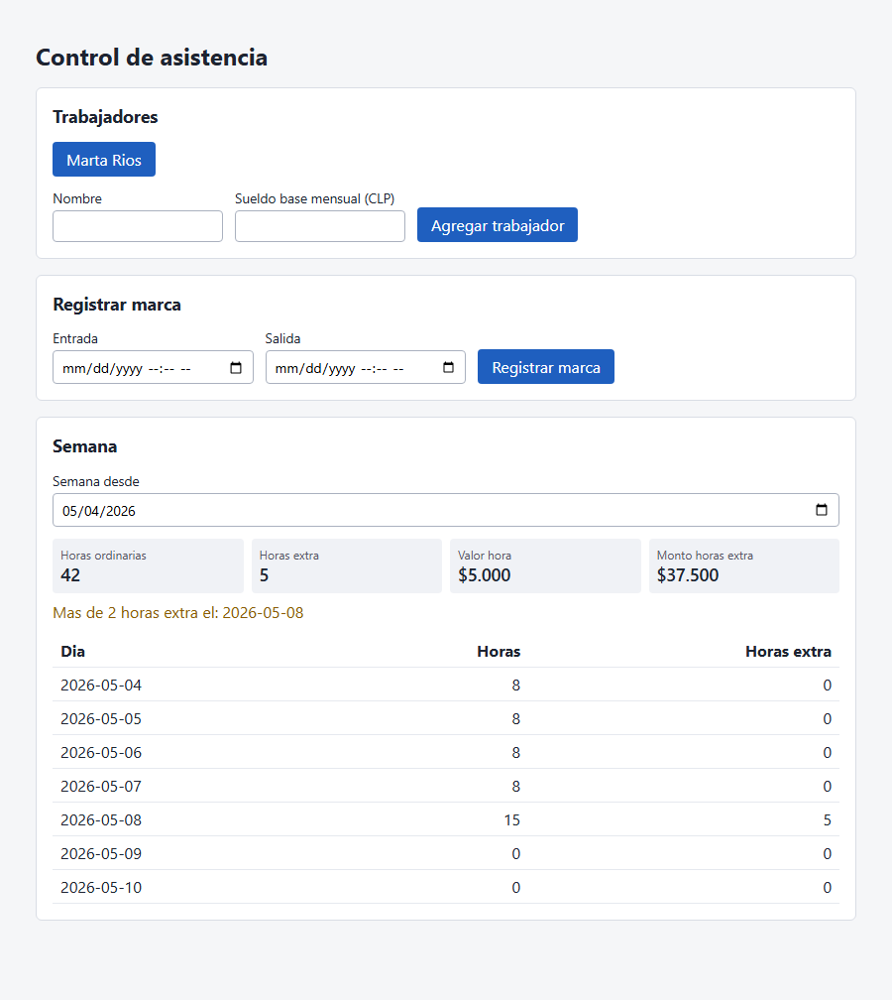

Control de asistencia
Registra la entrada y salida de un equipo y calcula las horas extra de cada semana con la jornada de 42 horas que rige en Chile desde abril de 2026.

Qué hace
- Suma las horas de la semana; lo que pasa de 42 es hora extra y se paga con 50 % de recargo.
- Si una marca cruza la medianoche, reparte las horas entre los dos días.
- Avisa cuando un día tiene más de 2 horas extra, que es el tope del Código del Trabajo.
- No deja registrar una marca que se cruza con otra del mismo trabajador.
Cómo está hecho
API en NestJS con PostgreSQL y una página en Next.js. Tiene pruebas del cálculo, pruebas de la API contra una base real y pruebas de Playwright en el navegador. Corren en GitHub Actions con cada cambio.
Código y detalle de la regla legal: github.com/Dheightsan/control-asistencia
Otros proyectos
- grounded-faq-api: API en FastAPI que responde solo con los datos de un archivo y avisa cuando no sabe.
- books-crawler: scraper en Python que respeta robots.txt y guarda en CSV y SQLite.
- gh-momentum: paquete publicado en PyPI que encuentra repos de GitHub que están creciendo rápido.